A dining room is easy to treat as an afterthought, throw a table here, chairs there, call it done. But it's actually where a lot of real life happens: Sunday brunches, long conversations, friends who linger a little too long because the setup is genuinely inviting.
This season's dining room trends mix comfort with style, aiming for spaces that feel curated without feeling intimidating. From bold palettes to furniture built to pull double duty, the overall direction reflects how people actually live now, relaxed, functional, and more than a little willing to be dramatic.

16 Dining Room Trends Worth Trying
1. Greenery and Biophilic Design
Plants are everywhere in dining rooms right now, from small potted herbs to a large floor plant anchoring a corner. They soften the space and connect it visibly to the outdoors.
A single large statement plant, like a fiddle leaf fig, does more for a room's energy than most people expect. It's consistently the thing guests comment on first.
Hanging plants save floor space, a small herb garden adds real function to a tight area, and a stylish pot elevates even the simplest plant into something that reads as decor.
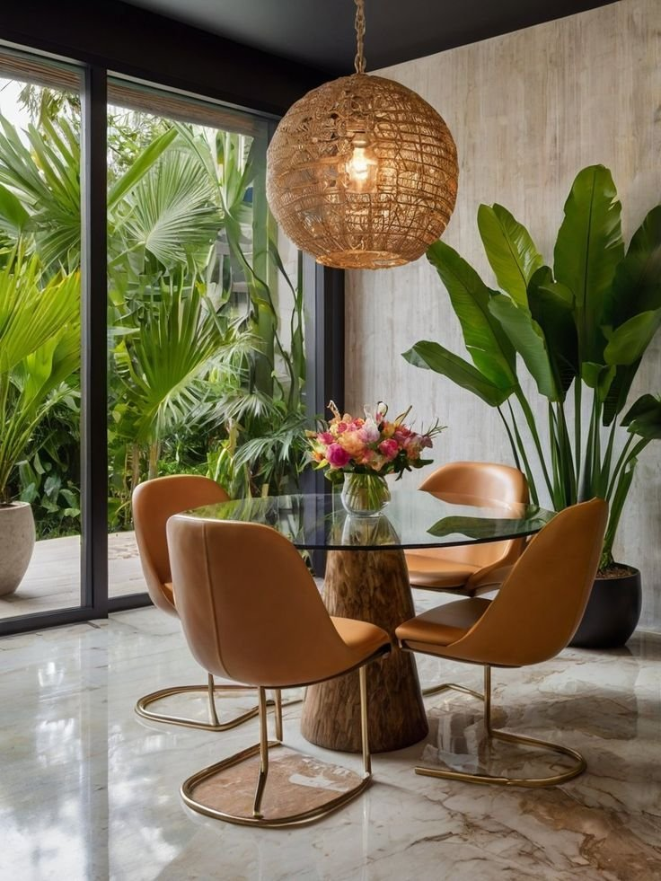
2. Minimalist Chic
Bold trends get a lot of attention, but a genuinely minimalist dining room still holds its own, clean lines, neutral palettes, and real restraint.
Blending simple furniture with a few subtle textures, like a wool rug, linen napkins, or one statement art piece, keeps minimalism from reading as boring.
Simple-quality tables, neutral chairs in soft gray, beige, or white, and one bold light fixture overhead are usually all it takes to make the whole room feel calm and intentional.
3. Open Shelving for Display
Open shelving has moved into dining rooms as a way to actually show off glassware, vintage plates, or a favorite cookbook collection instead of hiding it away.
It encourages genuine tidiness while keeping the space feeling airy rather than closed in.
Layering plates and leaning art together, adding a little greenery to soften the hard lines, and sticking to one consistent color scheme all keep the shelves looking curated instead of cluttered.
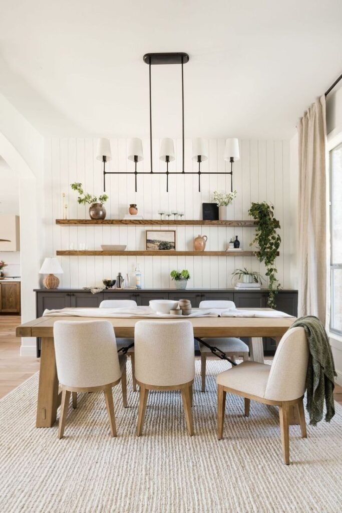
4. Sculptural Chairs
Chairs have stopped being purely functional. A sculptural or uniquely shaped chair adds a genuine piece of art to the room, not just a place to sit.
Pairing a classic table with a few sculptural, unusual chairs keeps the room grounded while still giving it real personality.
A curved back for comfort, a bold color to make the chair the focal point, or mixing two or three different chair styles together all build toward a more eclectic, curated look.
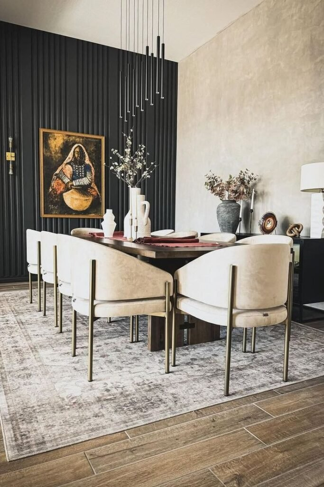
5. Textured Walls
Flat, plain walls are losing ground to real texture, plaster finishes, 3D panels, anything that adds depth beyond a coat of paint.
A textured wall makes a room feel cozier without adding clutter, and it creates a genuinely good backdrop for art and lighting to stand out against.
Venetian plaster reads as smooth and elegant, wood panels bring rustic warmth, and fabric wall panels add a practical bonus of sound absorption in a noisier space.
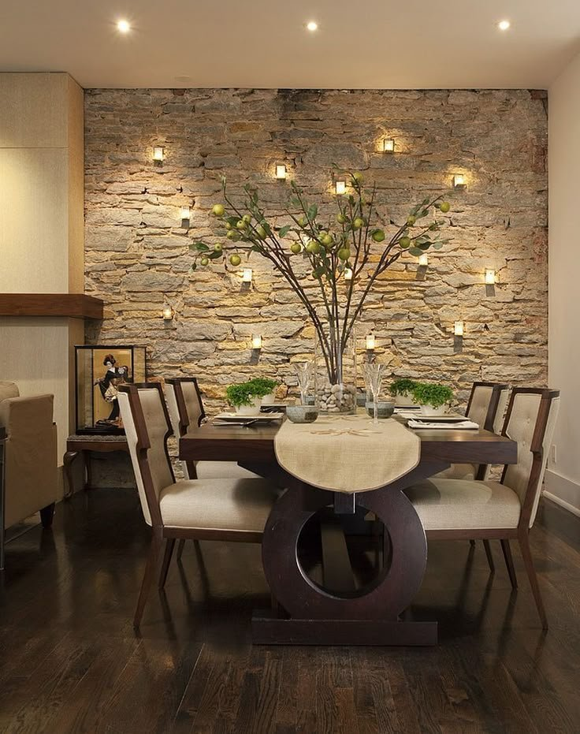
6. Pops of Color
Neutral palettes still dominate, but a strategic pop of color, jewel-toned chairs, vibrant art, a bold rug, keeps a dining room from feeling flat.
Even a single bright vase does real work toward making the space feel fresh and alive rather than static.
Keeping the walls neutral and letting furniture or decor deliver the actual color makes it far easier to switch things out seasonally without committing to anything permanent.
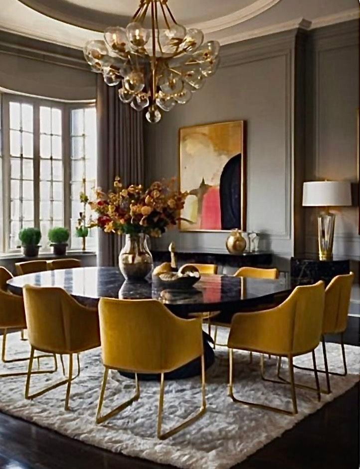
7. Layered Table Settings
The difference between a table that reads as a Pinterest board and one that reads as a rushed setup usually comes down to layering.
Starting with a neutral base like white plates, then adding colorful chargers, textured napkins, and a mix of metals or ceramics, builds a setting that looks genuinely luxurious.
Napkin rings, a few candles or a vase for height, and a careful mix of brass, copper, or silver all come together to make even an ordinary dinner feel like an occasion.
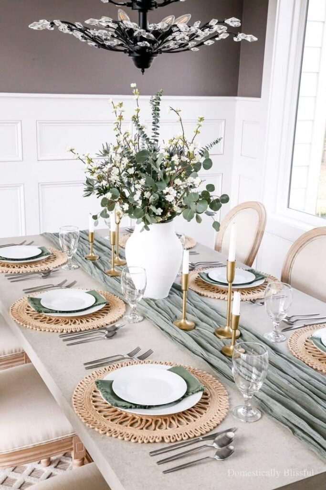
8. Bold Patterns That Make a Statement
A dining room that feels flat gets an instant lift from pattern, bold wallpaper, a geometric rug, or patterned upholstery all do real work without needing to cover every surface.
Pairing a dark floral wallpaper with a sleek wooden table adds real drama without tipping into chaos, especially when the tableware and surrounding decor stay simple.
Keeping patterns to two at most, and adding texture alongside them through woven fabric or raised wallpaper, keeps the look considered instead of overwhelming.
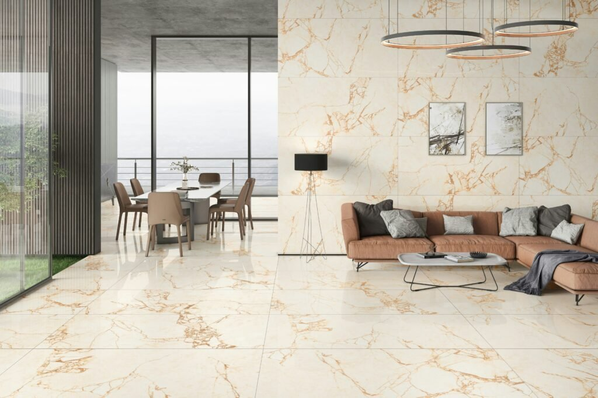

9. Art and Personal Touches That Pop
A dining room doesn't have to play it safe. Bold wall art, a curated gallery wall, or even a quirky sculpture add real personality to a space.
Mixing personal photos in with abstract art makes a room genuinely feel like it belongs to someone specific, and swapping it out seasonally is far cheaper than repainting.
Scale matters here, one large statement piece can anchor a room on its own, while a cluster of smaller pieces creates intimacy. One or two strong choices go further than a wall covered edge to edge.
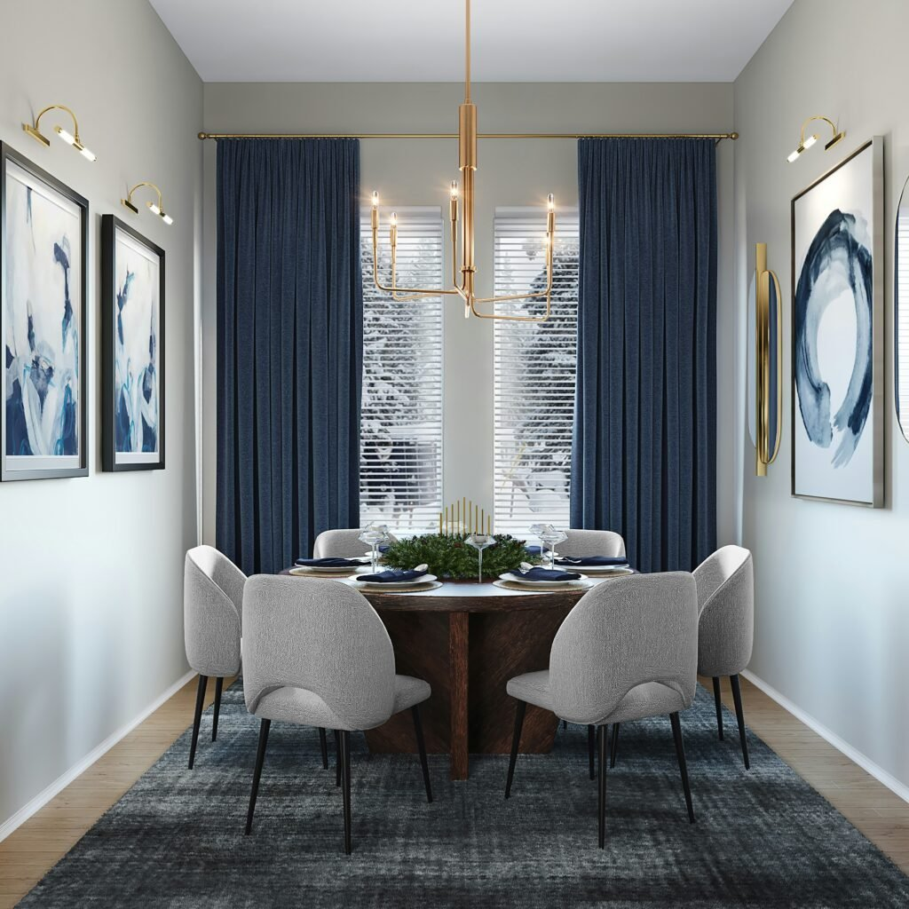
10. Sustainable and Eco-Friendly Pieces
Sustainability has moved well past a buzzword into a genuine home trend, reclaimed wood tables, upcycled chairs, and plant-based decor are showing up in dining rooms everywhere.
A piece with a little visible wear, or a chair made from recycled materials, tells a story in a way brand-new furniture rarely does.
Reclaimed wood, natural fabrics like linen or organic cotton, and vintage secondhand finds all bring that history in, and the trend pairs naturally with the broader shift toward natural, earthy materials.
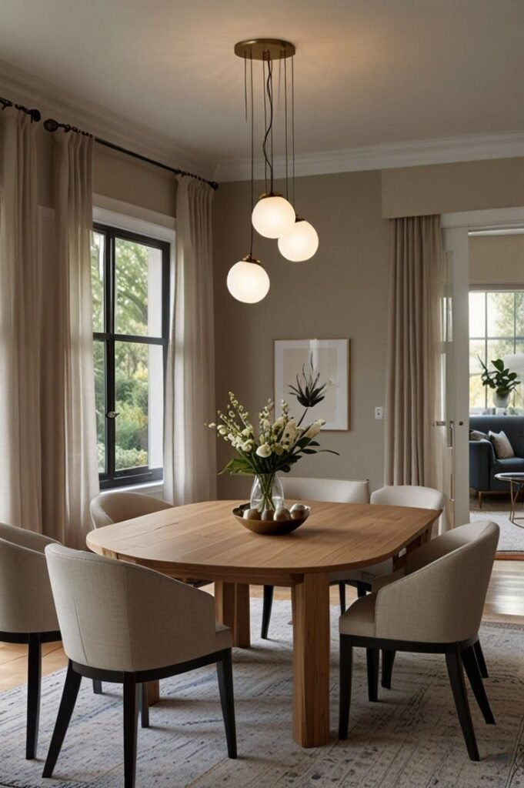
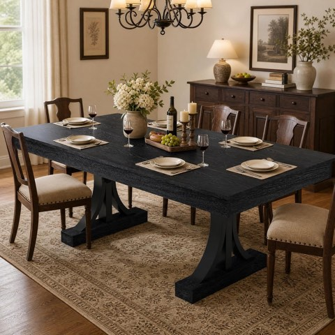
IDEALHOUSE Wood Dining Table for 6 to 8 with 2 Large Drawers, 70.87 Inch
Shop on Amazon11. Natural Materials and Earthy Textures
Wood, rattan, stone, and clay are everywhere right now, and the appeal makes sense, they bring warmth and a subtle, un-fussy kind of luxury.
Swapping a sleek glass table for solid wood with a live edge changes the whole mood of a room, it reads as more relaxed, cozier, and it only looks better as it ages.
Woven rattan chairs or pendant lights, and a few stone or ceramic pieces like bowls or trivets, round out the look without cluttering the table.
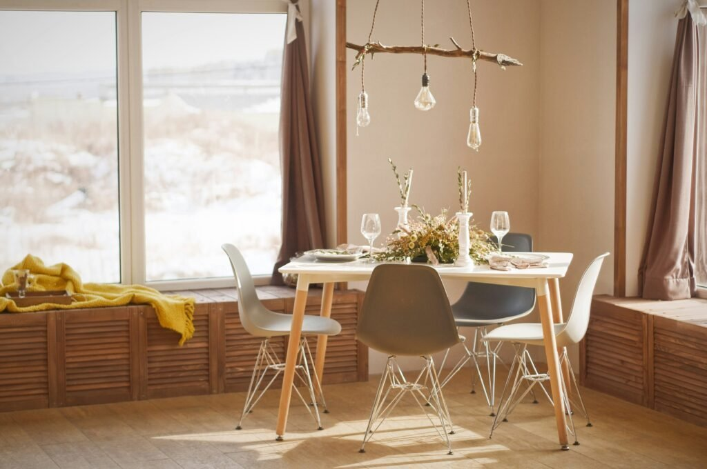
12. Layered Lighting for Real Mood Control
Nothing kills a dinner faster than a single harsh overhead bulb. Layered lighting, a mix of ambient, task, and accent sources, lets the room's mood actually shift depending on the occasion.
A chandelier above the table sets the overall tone, wall sconces add a subtle glow without overpowering the space, and a dimmable accent lamp adds warmth in the corner.
The trick is layering more than one source together. One light alone is fine; a few working in combination genuinely changes how the whole room feels.
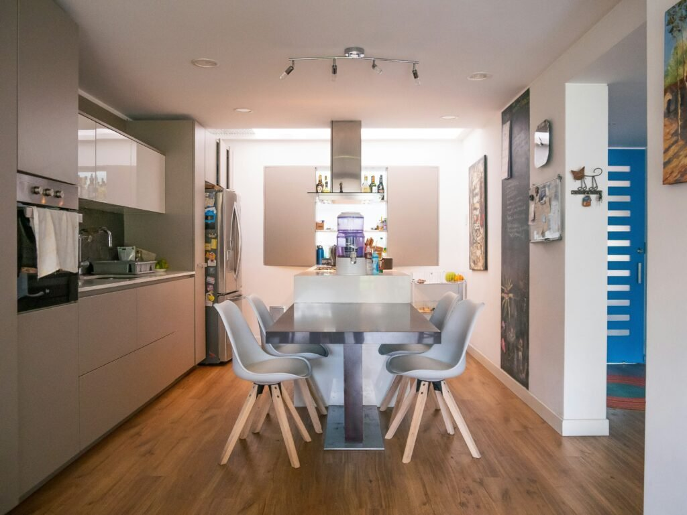
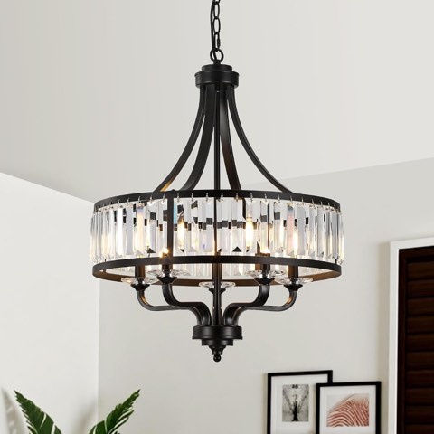
Modern Black Crystal Chandelier, 5-Light, Farmhouse Dining Room Fixture
Shop on Amazon13. Multi-Functional Furniture
Most dining rooms don't host a formal dinner party every week, more often they double as a home office, a craft station, or a homework hub. Furniture that pulls double duty earns its keep accordingly.
An expandable table seats two for a quiet breakfast or ten for a holiday gathering. A storage bench hides extra napkins or placemats out of sight. A convertible sideboard doubles as a mini-bar or buffet station depending on the occasion.
Investing in pieces built for more than one purpose keeps the room stylish without ever sacrificing practicality.
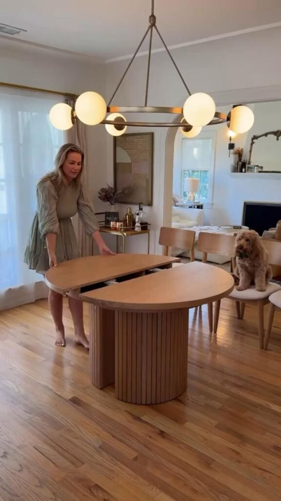
14. Curved Furniture for a Softer Feel
Straight lines have their place, but curves are genuinely having a moment, rounded dining tables, arched mirrors, chairs with a gentle curved back.
A round or oval table actually encourages conversation better than a rectangular one, with no one stuck awkwardly at a hard corner.
Curved furniture solves a practical problem too, centerpieces balance more naturally on a round table than they ever do on a rectangular one.
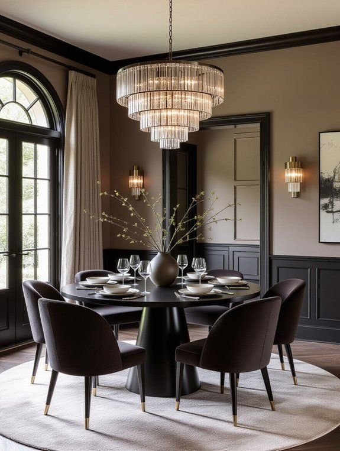
15. Statement Ceilings
A boring ceiling above a nicely designed room is a missed opportunity, and a statement ceiling fixes that instantly. Bold paint, geometric patterns, or textured wood panels make the whole room feel elevated, literally.
A dramatic ceiling transforms a space without crowding it, and it's an easy way to add real personality when the walls themselves stay neutral.
Deep navy, forest green, or matte black paint, warm wood panels, or a bold wallpaper pattern all work, just pair a statement ceiling with simpler furniture below so the room doesn't end up feeling like a disco.
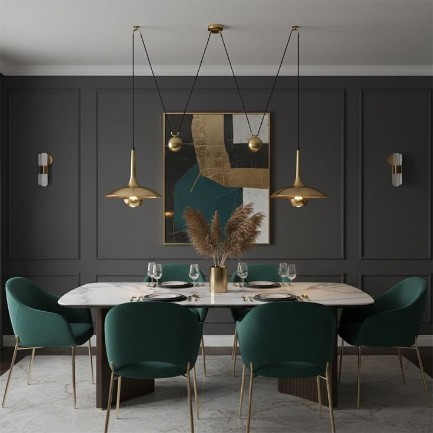

16. Dark, Moody Color Palettes
Dark walls in a dining room aren't depressing, they're dramatic in exactly the right way. Charcoal, deep emerald, and navy all create a cozy, intimate feel that makes an ordinary meal feel like something more.
Dark walls also make metallics and light wood pop in a way neutral walls never quite manage, giving the room a designer feel without a full renovation.
Balance keeps it from tipping into heavy, linen napkins, brass accents, or a soft rug lighten the room, and layered lighting through a chandelier, sconces, or candles makes a moody dining room glow instead of feeling gloomy.
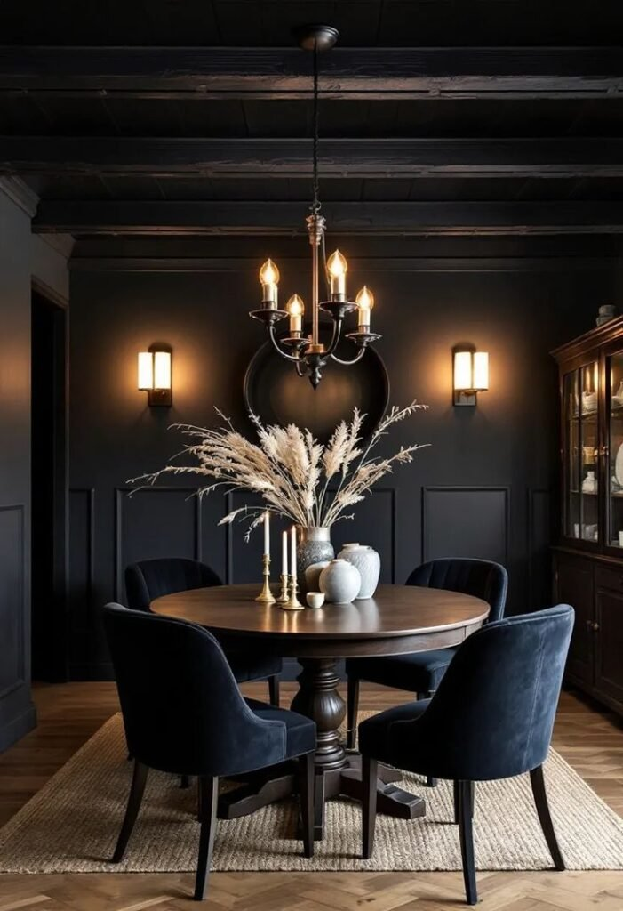

Final Thoughts
None of these sixteen trends need to happen all at once. Picking just two or three that genuinely fit the space can completely shift how a dining room feels.
Comfort, function, and personality matter more than chasing every trend on this list. Make it cozy, make it a little dramatic if that feels right, but most of all, make it actually feel like the people using it.
A trend only earns its place in the room if it survives contact with how the space actually gets used week to week.